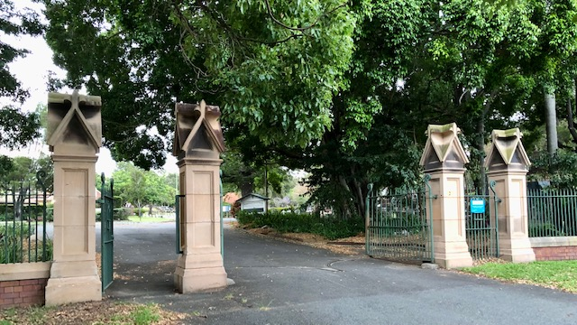
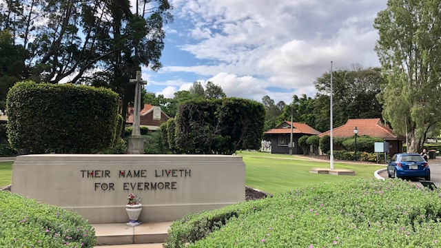
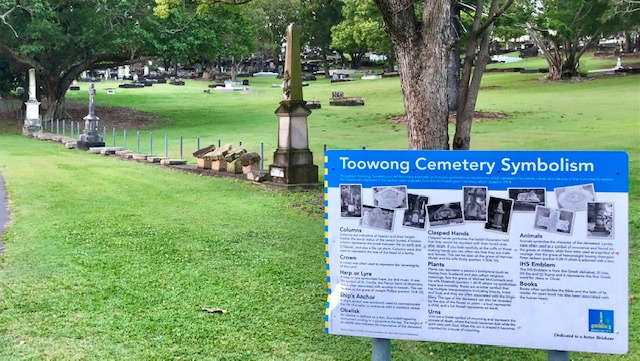

Friends of Toowong Cemetery
Friends of Toowong Cemetery is a volunteer group that discover and share the history and stories of Toowong Cemetery.



Heritage‑listed Toowong Cemetery is the largest cemetery in Queensland. The first burial was of Governor Samuel Blackall on 3 January 1871. Read his and hundreds of other stories about the people who shaped Brisbane, Queensland, and Australia's history.
On this site you'll find information about:
- Toowong Cemetery's history and the stories of people remembered here.
- how to find a grave in Toowong Cemetery and a Toowong Cemetery map.
- headstones including Queensland's oldest headstones, and our archaeological digs.
- research resources including an index of people in our stories.
- Friends of Toowong Cemetery – what we do, what we've done, and how to join in.
The cemetery is maintained by the Brisbane City Council.
Things to do at Toowong Cemetery
At Toowong Cemetery you can:
- take a self-guided walk and explore the stories of people who shaped our local history.
- join us on one of our regular guided heritage tours.
- discover the meaning of headstone symbols at the Symbolism display.
{kind=link}
Toowong Cemetery Headstone Symbolism Display